| Home | Kontakt | Steckbrief |
| Wandern/Trekking |
| Klettern/Klettersteige |
| Kanu |
| Fahrradtouren |
|
| Rucksack-Reisen |
| Touren mit Kindern |
| Wissenswertes |
Klettern im WeinbergDer nördlichste Klettersteig Deutschlands befindet sich im steilsten Weinberg Europas, dem Calmont zwischen Bremm und Ediger-Eller an der Mosel.
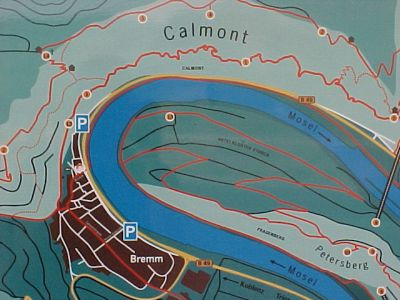
Lage des Steiges und anderer Wanderwege Beide Orte liegen an der B49, die direkt an der am linken Moselufer verläft und Ediger-Eller liegt an der Bahnstrecke Koblenz-Trier und ist per Nahverkehrszug erreichbar. Der eigentliche Klettersteig ist rund 5 Kilometer lang.
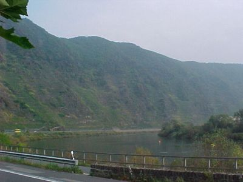
Der Weinberg Der Klettersteig geht auf halber Höhe über den Weinberg und ist gut ausgeschildert. Der Weg hat zwar vom örtlichen Tourismusverband die Bezeichnung Klettersteig aber in meinen Augen ist es nichts anderes als ein an einigen Stellen versicherter Höhenweg. So ist für diesen Weg wohl ein gewisses Maß an Schwindelfreiheit und Trittsicherheit notwendig aber außer stabilem Schuhwerk ist keine weitere Ausrüstung nötig.
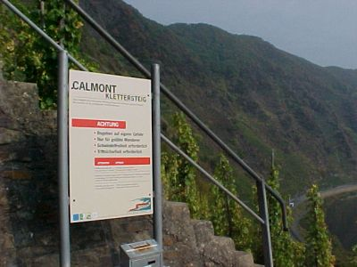
Der Einstieg auf Bremmer Seite Wir sind vom Bremm aus losgegangen und direkt nach dem Einstieg findet man sich auf einem ziemlich schmalen Weg wieder. Hier ist wohl auch versucht worden nicht schwindelfreie Wanderer direkt abzuschrecken und zur Umkehr zu bewegen, so wie es auf den meisten alpinen Klettersteigen auch gemacht wird.
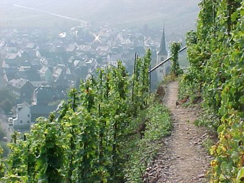
Blick zurück auf Bremm An einigen Stellen bieten sich interessante Tiefblicke hinunter zur Mosel und viele installierte Bänke laden zu Pausen ein.
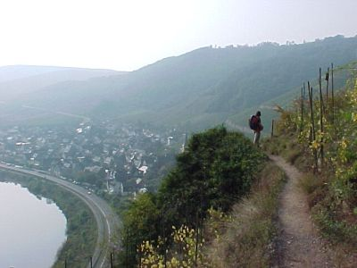
Hoch über der Mosel Leider ist der Klettersteig an schönen Tagen oft überlaufen und da er von beiden Seiten begangen wird, kann es an manchen Ausweichstellen schon mal etwas enger werden.
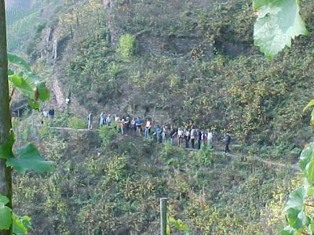
Da scheint gerade ein Reisebus angekommen zu sein Einige kurze Leitern, gespannte Drahtseile und Trittstifte erinnern an richtige Klettersteige. Allerdings nicht vergleichbar zu den Alpen. Das Begehen von Klettersteigen kann man dort jedenfalls nicht lernen. Dafür ist der Klettersteig im Landschaftspark in Duisburg für Nordlichter wesentlich geeigneter.
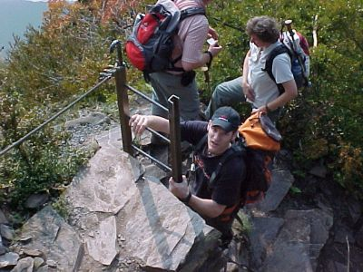
Eine der wenigen Leitern Nicht unterschätzen sollte man allerdings die Temperaturen in diesem Südhang und sollte daher ausreichend Flüssigkeit und auch etwas Eßbares mitnehmen. Kein Wunder, daß man dort auf zahlreiche Eidechsen trifft.
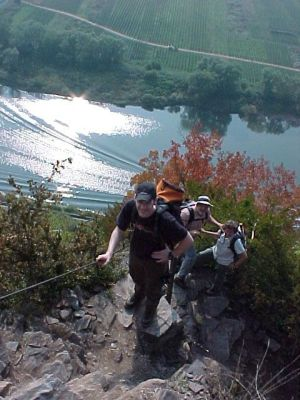
Danach ein Stückchen Seil
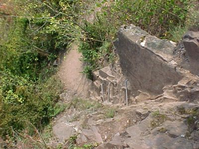
Hier ein paar Trittstifte Am Ende des Klettersteiges sind wir dann nicht hinunter zum Bahnhof Eller gegangen sondern hinauf zur Todesangst, einem Felsvorsprung, auf dem eine Deutschlandfahne weht und weiter hinauf bis zur Schutzhütte auf der Galgenlay. Auf dem Kamm des Berges sind wir dann zurück Richtung Bremm gegangen.
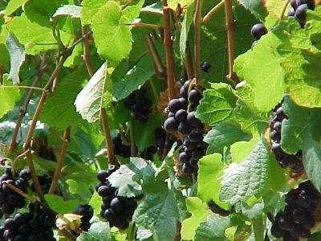
Abseits des Weges gibt es viele Verlockungen... Oberhalb von Bremm gibt es dann noch ein Gipfelkreuz, von dem an guten Tagen auch Gleitschirmflieger starten. Dort wurde dann auch das leckere Weintraubenendprodukt zum Verzehr angeboten.
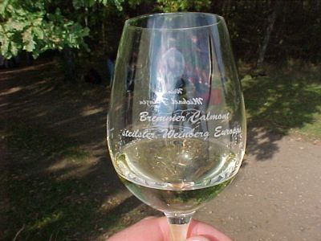
...die man besser hängen lässt, denn so schmeckt es noch mal so gut Informationen: Infos zum Klettersteig Infos auf via-ferrata.de Luftbild Calmont |